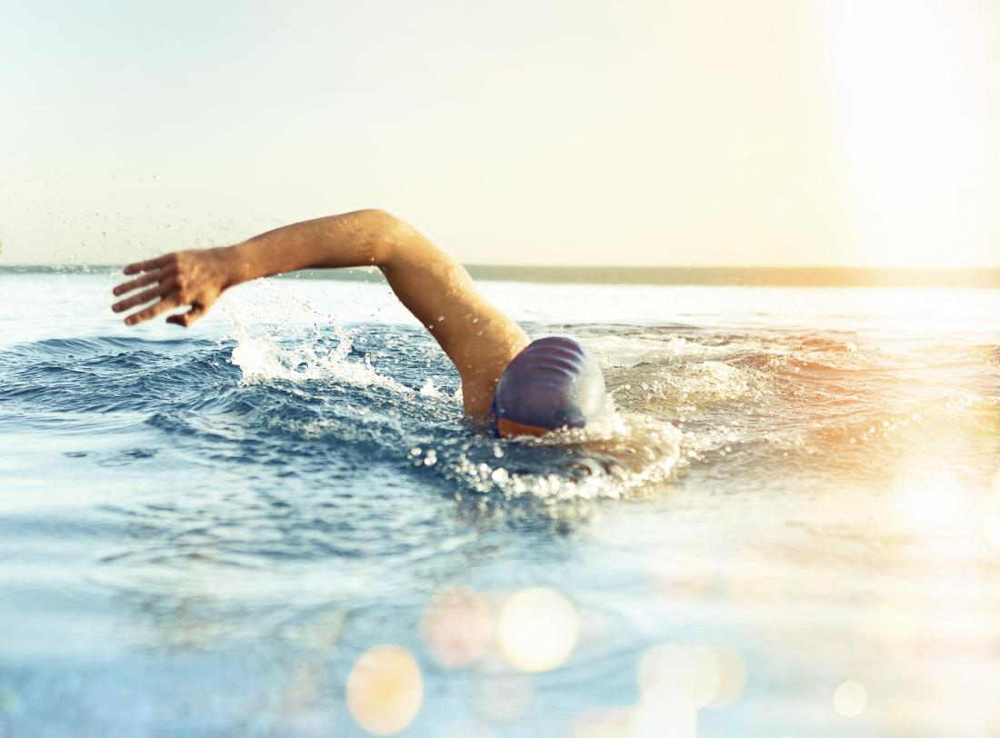
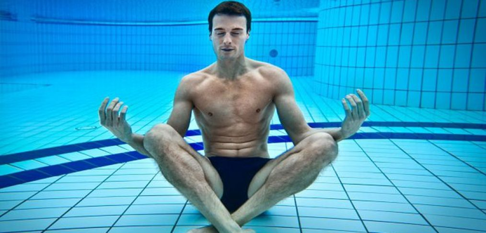

Peldēšana ir viens no populārākajiem sporta veidiem pasaulē, kas ne tikai dod fizisku formu, bet arī ietekmē mentālo veselību. Daži cilvēki peld, lai palielinātu savu izturību un spēku, bet citi peld, lai atpūstos un mierinātu savu prātu. Šajā rakstā aplūkosim, kā peldēšana var ietekmēt gan fizisko, gan mentālo veselību.
Fiziskās veselības ietekme
Peldēšana ir viena no vislabākajām fiziskās aktivitātes formām, kas var dot daudz labumu veselībai. Kad cilvēks peld, tas izmanto gandrīz visus muskuļus savā ķermenī, kas palīdz uzlabot muskuļu tonusu un stiepjamību. Turklāt, peldēšana palīdz uzlabot sirds un asinsvadu sistēmu, kas palīdz samazināt sirds slimību un insultu risku, min speciālisti. Tas arī uzlabo elpošanu un palīdz samazināt astmas simptomus. Turklāt, peldēšana ir viens no visefektīvākajiem veidiem, kā sadedzināt kalorijas, kas var palīdzēt noturēt veselīgu svaru vai zaudēt lieko svaru.(www.betterhealth.vic.gov.au)

(Photo: Coloradopaincare.com)
Mentālās veselības ietekme
Peldēšana var būt arī ļoti labvēlīga mentālajai veselībai. Kad cilvēks peld, tas var justies atbrīvots no stresa un spriedzes, kas palīdz mierināt prātu. Tā kā peldēšana ir viena no fiziskajām aktivitātēm, kas ir ļoti līdzīga meditācijai, tas var palīdzēt samazināt trauksmi un uzlabot garastāvokli. Peldēšana arī palīdz palielināt enerģiju un izturību, kas var palīdzēt cilvēkiem pārvarēt garīgos un emocionālos izaicinājumus.(blog.myswimpro.com)

(Photo: swimnow.co.uk)
Kopumā Latvijā peld 2313 licencēti peldētāji (swimming.lv), kas salīdzinot ar citām valstīm ir ļoti maz. Tāpēc vajadzētu popularizēt peldēšanu, jo tai nav nekādu negatīvu efektu. Tā uzlabo gan fizisko, gan mentālo veselību.